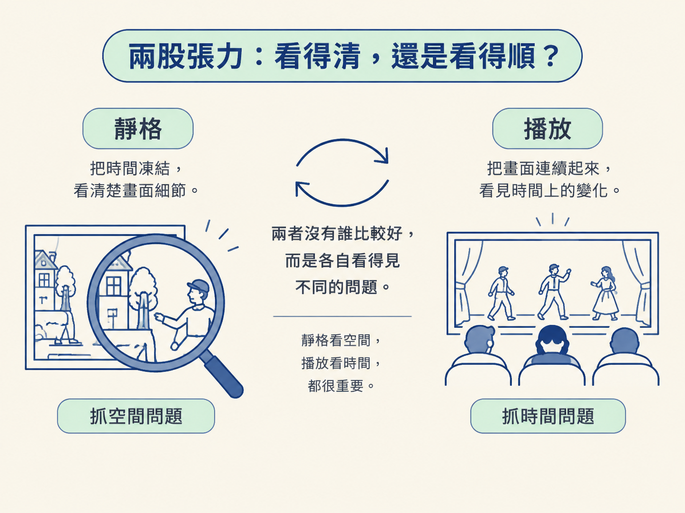
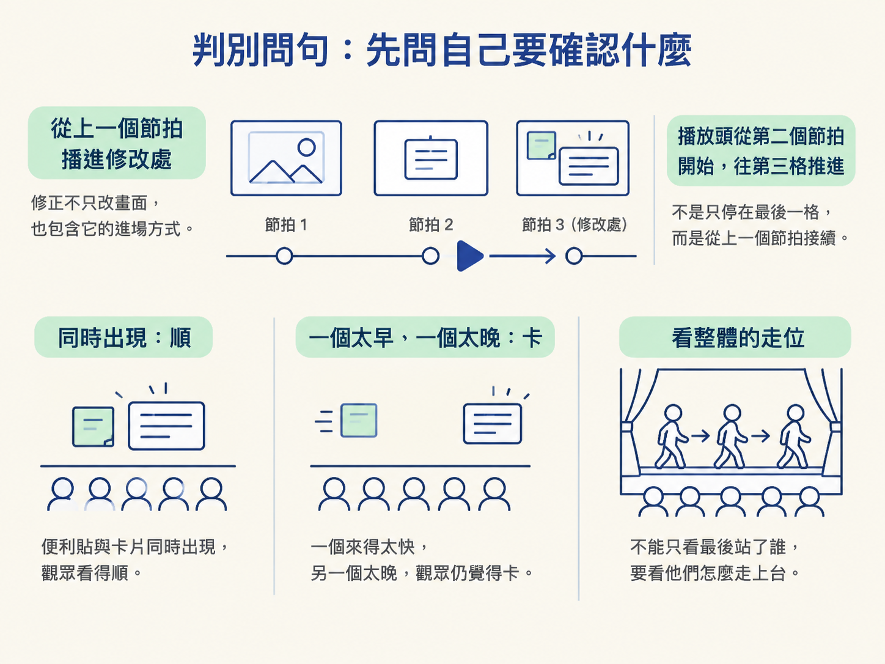
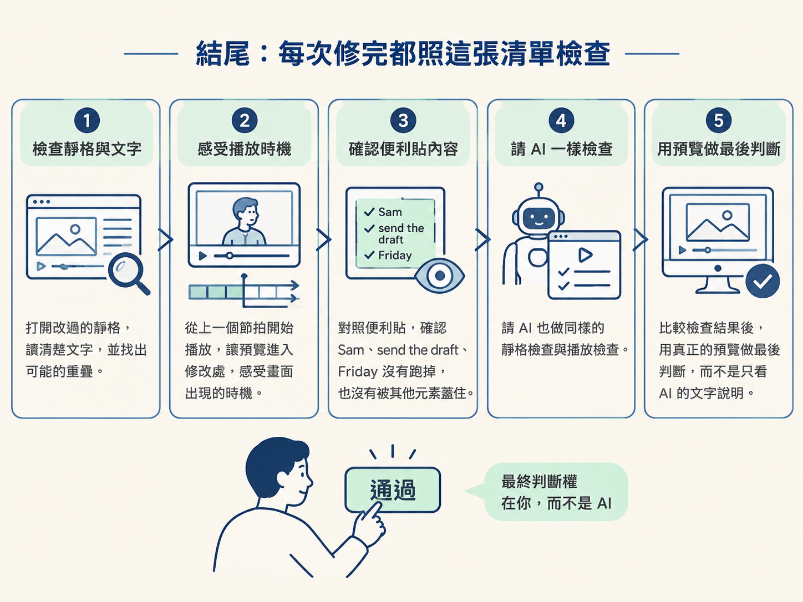

上一課，你把修正請求送給 AI，拿回更新後的畫面。這一步接在那裡：先檢查改過的靜格，再從上一個節拍播放到修改處，最後由你判斷是否通過。
AI 負責動手修改，也可以協助做同樣的檢查；但最後的驗收要由你完成。這一步的產出不是一句「已修正」，而是你確認過、可以進入下一關的畫面與播放預覽。
AI 很可能回你一句「已經修好了」。不過，這句話只能代表它認為自己完成了修改，不能直接當成結論。它知道自己改了哪些檔案，卻不知道你實際看過之後，覺得畫面是否清楚、節奏是否自然。
真正能下判斷的人是你，而判斷依據應該是可以播放的預覽。因為同一個畫面，用不同方式檢查，會看見不同問題。
把畫面停下來，你能讀清楚每一個字；讓畫面播起來，你才知道節奏和同步是否正確。這一課要幫你分清楚兩種檢查各自擅長什麼、什麼時候該用哪一種，以及為什麼通常兩個都要做。
你面對的選擇很簡單：要用靜格，也就是暫停的一張畫面來判斷；還是用播放，也就是動起來的預覽來判斷？
兩者沒有誰比較好，而是各自看得見不同的問題。靜格把時間凍結，讓你看清楚畫面中的空間關係；播放則把畫面連續起來，讓你看見時間上的變化。就像檢查一場戲：靜格像是仔細看一張劇照，播放則像是坐在觀眾席看整段演出。

| 靜格（暫停的畫面） | 播放（動起來的預覽） | |
|---|---|---|
| 最擅長抓 | 文字讀不讀得到、元素有沒有重疊、版面是否太擁擠 | 畫面有沒有跟旁白一起出現、停留時間夠不夠、前後銜接順不順 |
| 主要處理 | 空間問題 | 時間問題 |
| 看不到的事 | 聽不到節奏，也看不出同步是否正確 | 不容易看出一閃而過的重疊或錯字 |
| 適合用在 | 想確認「這一格長什麼樣」 | 想確認「整段看過去順不順」 |
用共同範例來看，靜格可以幫你檢查便利貼上的 Sam、send the draft、Friday 是否被卡片蓋住，或文字是否擠在一起。
播放則要回答另一個問題：旁白講到「send the draft」時，對應的欄位有沒有同時亮起來？它是否停留得夠久，讓觀眾看得完？
一個是在檢查「畫面放得對不對」，另一個是在檢查「出現的時機對不對」。問題不同，因此兩種檢查都不能省略。
不知道該用哪一種方式時，先問自己：
我要確認的是「字看不看得清楚、元素有沒有被蓋住」，還是「畫面和旁白對不對得上、停留時間夠不夠」？
還有一個容易漏掉的判準：不要只看修改完成的那一格，要從「上一個節拍」播進修改處。
因為修正有時改的不是某一張畫面本身，而是它進場的方式。就算便利貼和卡片最後都出現在正確位置，如果一個來得太快、另一個來得太晚，觀眾看起來仍然會覺得不順。只盯著最後一格，就像只看舞台最後站了誰，卻沒看他們是怎麼走上台的。

第一個反例：只相信 AI 的文字說明。
AI 說「已修正」，只代表它認為修改完成，並沒有證明觀眾實際看到的效果。驗收時要打開真正的預覽，讓畫面和播放結果自己說話。
第二個反例：只看修改後的那一格。
便利貼和卡片同時出現的效果，取決於它們怎麼一起進來。靜止畫面可能看起來完全正確，但播放時才發現它們出現得太晚、太快，或和旁白錯開。
第三個反例：只在舒服的大螢幕上放大檢查。
你在自己的大螢幕上看得清楚，不代表觀眾在手機上也看得清楚。驗收時要記得，標準是觀眾可能使用的螢幕，而不是只有你眼前這一個畫面。
把判斷整理成一個可以重複使用的檢查表。每次 AI 完成修正後，AI 和你都可以照著做，但最後仍由你用真正的預覽下判斷。

靜格抓空間問題，播放抓時間問題；而修正常常發生在「進入某一格的過程」裡。因此，預設的驗收動作是：先讀改過的靜格，再從上一個節拍播進修改處，最後用真正的預覽判斷是否通過。
當這次修正通過這兩道檢查，畫面才算真的可以進入下一關。下一課要把它變成別人也能打開的檔案；而在匯出之前，先跑一次小量測試，才能確認匯出流程是否照預期運作。